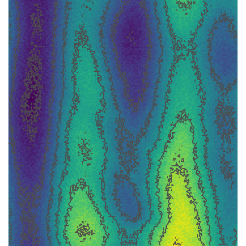

Tangible Landscape Activities Overview
Vertical concave features
Izzi water flow test
Summit Finder and contours
Pressure waves with contours
Topographic Index activity
Current Solar Radiation at Location

Resampling Methods Comparison
High-Low Pixel Values

Least Cost Path